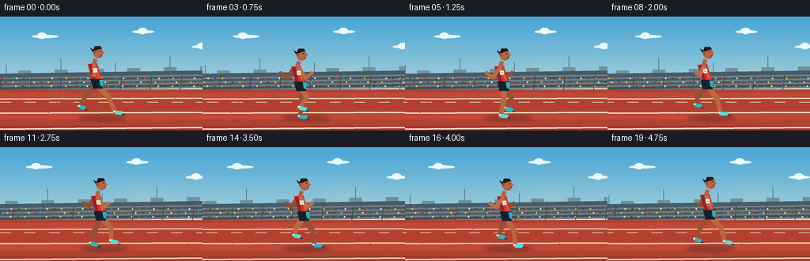
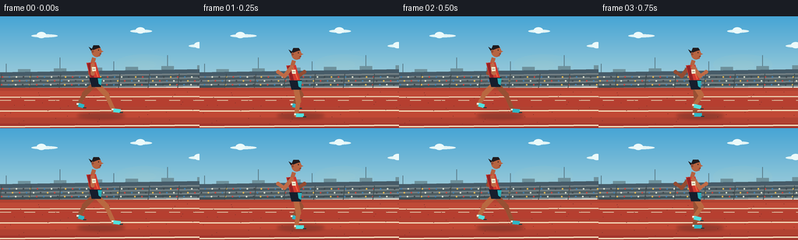

CODING AGENTS AS PIXEL WORLD MODELS
traex/GPT-5.6-Sol · motion_rationality_0035
点击播放 · 原生 RGB 像素
逐轮保存的候选
回放视频、检查图与代码变化。
每份候选均可单独播放。实际图片检查记录在下方工具轨迹中。
候选 01播放与检查图
点击播放 · 原生 RGB 像素

展开代码变化
--- 上一保存版本
+++ 本次保存版本
@@ -0,0 +1,186 @@
+from pathlib import Path
+import math
+import numpy as np
+from PIL import Image, ImageDraw, ImageFilter
+import artifact_io
+
+W,H,N,FPS = 256,144,20,4.0
+S=4
+
+def sc(v): return int(round(v*S))
+def pts(arr): return [(sc(x),sc(y)) for x,y in arr]
+def line(d, xy, fill, width, joint='curve'):
+ d.line(pts(xy), fill=fill, width=sc(width), joint=joint)
+def ellipse(d, box, fill, outline=None, width=1):
+ d.ellipse(tuple(sc(x) for x in box), fill=fill, outline=outline, width=sc(width))
+def poly(d, xy, fill, outline=None): d.polygon(pts(xy), fill=fill, outline=outline)
+
+def gradient_img(top,bottom):
+ a=np.zeros((H*S,W*S,3),dtype=np.uint8)
+ t=np.array(top,float); b=np.array(bottom,float)
+ for y in range(H*S):
+ q=y/(H*S-1); a[y,:,:]=np.clip(t*(1-q)+b*q,0,255)
+ return Image.fromarray(a)
+
+def cyclic_interp(keys, p):
+ p=p%1.0; n=len(keys); u=p*n; i=int(math.floor(u)); f=u-i
+ a=np.array(keys[i%n],float); b=np.array(keys[(i+1)%n],float)
+ f=f*f*(3-2*f)
+ return tuple(a*(1-f)+b*f)
+
+# Knee, ankle, toe positions relative to the hip through one stride.
+GAIT=[
+ ((14,15),(23,35),(32,36)),
+ ((12,18),(15,36),(25,36)),
+ ((4,20),(1,38),(11,38)),
+ ((-7,18),(-12,34),(-3,36)),
+ ((-14,14),(-22,28),(-15,30)),
+ ((-10,13),(-12,24),(-4,25)),
+ ((7,12),(-4,25),(5,27)),
+ ((14,14),(14,31),(23,33)),
+]
+
+def gait(p):
+ return tuple(cyclic_interp([k[j] for k in GAIT],p) for j in range(3))
+
+def draw_limb(draw, hip, joints, rear=False):
+ knee,ankle,toe=joints
+ k=(hip[0]+knee[0],hip[1]+knee[1]); a=(hip[0]+ankle[0],hip[1]+ankle[1]); t=(hip[0]+toe[0],hip[1]+toe[1])
+ skin=(151,82,54) if rear else (184,105,67)
+ # muscular tapered-looking legs, with joint caps
+ line(draw,[hip,k],skin,7.0)
+ ellipse(draw,(k[0]-3.5,k[1]-3.5,k[0]+3.5,k[1]+3.5),skin)
+ line(draw,[k,a],skin,5.4)
+ ellipse(draw,(a[0]-2.6,a[1]-2.6,a[0]+2.6,a[1]+2.6),skin)
+ # white sock and bright racing shoe
+ line(draw,[(a[0],a[1]-2),a],(236,240,232),4.8)
+ shoe=(48,181,196) if rear else (83,222,220)
+ line(draw,[a,t],shoe,5.0)
+ line(draw,[(t[0]-1,t[1]+2),(t[0]+3,t[1]+2)],(27,63,66),1.2)
+
+def draw_arm(draw, shoulder, q, rear=False):
+ # q>0 is forward; a compact, bent sprinting arm action.
+ ex=shoulder[0]+10.5*q
+ ey=shoulder[1]+11.5+1.2*abs(q)
+ wx=ex+8.0*q
+ wy=ey-5.5+7.0*(1-abs(q))
+ skin=(147,78,53) if rear else (188,107,72)
+ line(draw,[shoulder,(ex,ey)],skin,5.2)
+ ellipse(draw,(ex-2.7,ey-2.7,ex+2.7,ey+2.7),skin)
+ line(draw,[(ex,ey),(wx,wy)],skin,4.3)
+ ellipse(draw,(wx-2.5,wy-2.5,wx+2.5,wy+2.5),skin)
+
+def frame(idx):
+ t=idx/FPS
+ im=gradient_img((73,164,211),(223,232,218))
+ d=ImageDraw.Draw(im)
+ pan=t*34.0
+ # warm horizon glow
+ overlay=Image.new('RGBA',im.size,(0,0,0,0)); od=ImageDraw.Draw(overlay)
+ for r,alpha in [(38,7),(26,10),(15,15)]:
+ ellipse(od,(185-r,62-r*.35,185+r,62+r*.35),(255,221,149,alpha))
+ im=Image.alpha_composite(im.convert('RGBA'),overlay).convert('RGB'); d=ImageDraw.Draw(im)
+ # wispy clouds with slow parallax
+ for cx,cy,ww in [(30,23,34),(157,17,28),(232,36,27)]:
+ x=((cx-pan*.08+35)%300)-25
+ ellipse(d,(x,cy,x+ww,cy+4),(224,241,242))
+ ellipse(d,(x+7,cy-3,x+19,cy+5),(232,246,246))
+ # far skyline behind the stadium
+ for j in range(-2,16):
+ x=j*23-(pan*.18%23)
+ ht=8+(j*7%13)
+ poly(d,[(x,83),(x,83-ht),(x+16,83-ht),(x+16,83)],(111,145,155))
+ if j%3==0: line(d,[(x+8,83-ht),(x+8,69-ht)],(91,123,135),1)
+ # grandstand silhouette and roof
+ poly(d,[(0,72),(256,68),(256,96),(0,96)],(72,93,105))
+ poly(d,[(0,77),(256,73),(256,92),(0,92)],(116,128,132))
+ for yy,col in [(79,(73,90,98)),(84,(81,96,100)),(89,(66,82,88))]:
+ poly(d,[(0,yy),(256,yy-4),(256,yy-1),(0,yy+3)],col)
+ # spectators as coherent panning colored dots
+ crowd_cols=[(230,186,85),(199,72,65),(69,128,173),(221,223,205),(67,73,78)]
+ for row in range(3):
+ y=77+row*5
+ for j in range(34):
+ x=(j*9 + row*4 - pan*.55)%270-7
+ ellipse(d,(x,y,x+2,y+2),crowd_cols[(j+row*3)%len(crowd_cols)])
+ # rail and support posts
+ line(d,[(0,94),(256,91)],(225,226,216),2)
+ for j in range(-1,10):
+ x=j*38-(pan*.65%38)
+ line(d,[(x,92),(x+2,74)],(68,79,82),1)
+ # Running track, subtle vertical shading
+ poly(d,[(0,92),(256,92),(256,144),(0,144)],(176,69,53))
+ for y,col in [(96,(189,76,58)),(107,(181,66,51)),(121,(191,75,56)),(138,(162,57,48))]:
+ poly(d,[(0,y),(256,y),(256,min(144,y+9)),(0,min(144,y+9))],col)
+ # lane separators in perspective
+ line(d,[(0,104),(256,103)],(238,220,190),1.4)
+ line(d,[(0,122),(256,121)],(243,223,190),1.8)
+ line(d,[(0,142),(256,140)],(242,220,188),2.0)
+ # moving lane dashes and textured aggregate
+ for j in range(-2,12):
+ x=j*31-(pan%31)
+ line(d,[(x,108),(x+14,108)],(222,194,165),1)
+ for j in range(45):
+ x=(j*37 + (j*j)%19 - pan*1.0)%270-7
+ y=97+(j*17)%43
+ ellipse(d,(x,y,x+0.8,y+0.8),(126,51,47))
+ # soft moving ground shadow
+ sh=Image.new('RGBA',im.size,(0,0,0,0)); sd=ImageDraw.Draw(sh)
+ sx=128+2*math.sin(t*.6)
+ ellipse(sd,(sx-29,124,sx+32,132),(33,29,31,70))
+ sh=sh.filter(ImageFilter.GaussianBlur(sc(2.0)))
+ im=Image.alpha_composite(im.convert('RGBA'),sh).convert('RGB'); d=ImageDraw.Draw(im)
+
+ # Athlete. Camera tracks almost fully, with a gentle screen drift.
+ phase=(t/0.96)%1.0
+ bob=-1.7*math.cos(4*math.pi*phase)
+ bx=122.5 + 1.35*t + .45*math.sin(t*.8)
+ hip=(bx,87.5+bob)
+ shoulder=(bx-5.8,61.5+bob)
+
+ # far arm behind body, opposite far leg
+ qrear=math.sin(2*math.pi*(phase+0.5)+math.pi)
+ draw_arm(d,(shoulder[0]-1,shoulder[1]+1),qrear,True)
+ # far leg then near leg for readable crossings
+ draw_limb(d,hip,gait(phase+0.5),True)
+ draw_limb(d,hip,gait(phase),False)
+
+ # shorts and torso (forward lean)
+ poly(d,[(hip[0]-8,hip[1]-7),(hip[0]+8,hip[1]-7),(hip[0]+7,hip[1]+5),(hip[0]-5,hip[1]+5)],(25,34,48))
+ # short hems / blue side stripe
+ poly(d,[(hip[0]+3,hip[1]-6),(hip[0]+8,hip[1]-6),(hip[0]+7,hip[1]+3),(hip[0]+4,hip[1]+1)],(44,175,184))
+ poly(d,[(shoulder[0]-6,shoulder[1]),(shoulder[0]+6,shoulder[1]-1),(hip[0]+6,hip[1]-7),(hip[0]-7,hip[1]-7)],(205,61,51))
+ # singlet highlight and dark side panel
+ poly(d,[(shoulder[0]-5,shoulder[1]+1),(shoulder[0]-1,shoulder[1]),(hip[0]-2,hip[1]-7),(hip[0]-6,hip[1]-7)],(148,37,40))
+ line(d,[(shoulder[0]+2,shoulder[1]),(hip[0]+3,hip[1]-8)],(239,104,64),1.3)
+ # neck
+ line(d,[(shoulder[0]+2,shoulder[1]),(shoulder[0]+4,55+bob)],(180,99,67),5)
+ # near arm on top; opposite near-leg stride
+ q=math.sin(2*math.pi*phase+math.pi)
+ draw_arm(d,(shoulder[0]+2,shoulder[1]+1),q,False)
+
+ # head with profile facing right
+ hx=shoulder[0]+7.0; hy=47.0+bob
+ ellipse(d,(hx-6.2,hy-7.2,hx+6.4,hy+7.0),(181,101,68))
+ # ear, nose and jaw silhouette
+ ellipse(d,(hx-6.5,hy-1.5,hx-3.5,hy+1.5),(145,76,55))
+ poly(d,[(hx+5,hy-2),(hx+9,hy),(hx+5.5,hy+1.2)],(181,101,68))
+ poly(d,[(hx+6,hy+1),(hx+4.5,hy+6),(hx,hy+7),(hx+5,hy+2)],(171,88,61))
+ # hair cap and small pony/tail tuft for dynamic silhouette
+ poly(d,[(hx-6,hy-3),(hx-4,hy-8),(hx+3,hy-8),(hx+5,hy-5),(hx+1,hy-4),(hx-4,hy-2)],(35,31,34))
+ poly(d,[(hx-5,hy-3),(hx-10,hy-6),(hx-7,hy-1)],(35,31,34))
+ ellipse(d,(hx+2.0,hy-2.5,hx+3.2,hy-1.3),(31,28,27))
+ line(d,[(hx+4,hy+3),(hx+6,hy+3)],(96,45,40),.8)
+ # tiny bib adds athletic context
+ poly(d,[(shoulder[0]+1,67+bob),(shoulder[0]+6,66.7+bob),(shoulder[0]+6.3,72+bob),(shoulder[0]+1.5,72.4+bob)],(240,234,205))
+ line(d,[(shoulder[0]+2.3,69.5+bob),(shoulder[0]+5.3,69.5+bob)],(70,70,69),.6)
+
+ # final antialias/downsample + a light coherent grade
+ im=im.resize((W,H),Image.Resampling.LANCZOS).convert('RGB')
+ arr=np.array(im,dtype=np.float32)
+ arr=np.clip((arr-128)*1.035+128,0,255).astype(np.uint8)
+ return arr
+
+frames=np.stack([frame(i) for i in range(N)],axis=0)
+artifact_io.save(frames,Path(__file__).resolve().parent)
+print('saved',frames.shape,frames.dtype)
可观测工具轨迹
实际执行的命令与返回图片。
命令 1exit 0
/bin/bash -lc "cat prompt.txt && printf '\\n--- GENERATION_RULES ---\\n' && cat GENERATION_RULES.md && printf '\\n--- TASK_SPEC ---\\n' && cat task_spec.json"
命令 2exit 0
/bin/bash -lc "find . -maxdepth 2 -type f -printf '%p\\n' | sort && printf '\\nTOOLS\\n' && command -v ffmpeg || true && command -v blender || true && command -v python3 || true"
命令 3exit 0
/bin/bash -lc 'cat artifact_io.py'
命令 4exit 0
/bin/bash -lc "cat > generate.py <<'PY'
from pathlib import Path
import math
import numpy as np
from PIL import Image, ImageDraw, ImageFilter
import artifact_io
W,H,N,FPS = 256,144,20,4.0
S=4
def sc(v): return int(round(v*S))
def pts(arr): return [(sc(x),sc(y)) for x,y in arr]
def line(d, xy, fill, width, joint='curve'):
d.line(pts(xy), fill=fill, width=sc(width), joint=joint)
def ellipse(d, box, fill, outline=None, width=1):
d.ellipse(tuple(sc(x) for x in box), fill=fill, outline=outline, width=sc(width))
def poly(d, xy, fill, outline=None): d.polygon(pts(xy), fill=fill, outline=outline)
def gradient_img(top,bottom):
a=np.zeros((H*S,W*S,3),dtype=np.uint8)
t=np.array(top,float); b=np.array(bottom,float)
for y in range(H*S):
q=y/(H*S-1); a[y,:,:]=np.clip(t*(1-q)+b*q,0,255)
return Image.fromarray(a)
def cyclic_interp(keys, p):
p=p%1.0; n=len(keys); u=p*n; i=int(math.floor(u)); f=u-i
a=np.array(keys[i%n],float); b=np.array(keys[(i+1)%n],float)
f=f*f*(3-2*f)
return tuple(a*(1-f)+b*f)
# Knee, ankle, toe positions relative to the hip through one stride.
GAIT=[
((14,15),(23,35),(32,36)),
((12,18),(15,36),(25,36)),
((4,20),(1,38),(11,38)),
((-7,18),(-12,34),(-3,36)),
((-14,14),(-22,28),(-15,30)),
((-10,13),(-12,24),(-4,25)),
((7,12),(-4,25),(5,27)),
((14,14),(14,31),(23,33)),
]
def gait(p):
return tuple(cyclic_interp([k[j] for k in GAIT],p) for j in range(3))
def draw_limb(draw, hip, joints, rear=False):
knee,ankle,toe=joints
k=(hip[0]+knee[0],hip[1]+knee[1]); a=(hip[0]+ankle[0],hip[1]+ankle[1]); t=(hip[0]+toe[0],hip[1]+toe[1])
skin=(151,82,54) if rear else (184,105,67)
# muscular tapered-looking legs, with joint caps
line(draw,[hip,k],skin,7.0)
ellipse(draw,(k[0]-3.5,k[1]-3.5,k[0]+3.5,k[1]+3.5),skin)
line(draw,[k,a],skin,5.4)
ellipse(draw,(a[0]-2.6,a[1]-2.6,a[0]+2.6,a[1]+2.6),skin)
# white sock and bright racing shoe
line(draw,[(a[0],a[1]-2),a],(236,240,232),4.8)
shoe=(48,181,196) if rear else (83,222,220)
line(draw,[a,t],shoe,5.0)
line(draw,[(t[0]-1,t[1]+2),(t[0]+3,t[1]+2)],(27,63,66),1.2)
def draw_arm(draw, shoulder, q, rear=False):
# q>0 is forward; a compact, bent sprinting arm action.
ex=shoulder[0]+10.5*q
ey=shoulder[1]+11.5+1.2*abs(q)
wx=ex+8.0*q
wy=ey-5.5+7.0*(1-abs(q))
skin=(147,78,53) if rear else (188,107,72)
line(draw,[shoulder,(ex,ey)],skin,5.2)
ellipse(draw,(ex-2.7,ey-2.7,ex+2.7,ey+2.7),skin)
line(draw,[(ex,ey),(wx,wy)],skin,4.3)
ellipse(draw,(wx-2.5,wy-2.5,wx+2.5,wy+2.5),skin)
def frame(idx):
t=idx/FPS
im=gradient_img((73,164,211),(223,232,218))
d=ImageDraw.Draw(im)
pan=t*34.0
# warm horizon glow
overlay=Image.new('RGBA',im.size,(0,0,0,0)); od=ImageDraw.Draw(overlay)
for r,alpha in [(38,7),(26,10),(15,15)]:
ellipse(od,(185-r,62-r*.35,185+r,62+r*.35),(255,221,149,alpha))
im=Image.alpha_composite(im.convert('RGBA'),overlay).convert('RGB'); d=ImageDraw.Draw(im)
# wispy clouds with slow parallax
for cx,cy,ww in [(30,23,34),(157,17,28),(232,36,27)]:
x=((cx-pan*.08+35)%300)-25
ellipse(d,(x,cy,x+ww,cy+4),(224,241,242))
ellipse(d,(x+7,cy-3,x+19,cy+5),(232,246,246))
# far skyline behind the stadium
for j in range(-2,16):
x=j*23-(pan*.18%23)
ht=8+(j*7%13)
poly(d,[(x,83),(x,83-ht),(x+16,83-ht),(x+16,83)],(111,145,155))
if j%3==0: line(d,[(x+8,83-ht),(x+8,69-ht)],(91,123,135),1)
# grandstand silhouette and roof
poly(d,[(0,72),(256,68),(256,96),(0,96)],(72,93,105))
poly(d,[(0,77),(256,73),(256,92),(0,92)],(116,128,132))
for yy,col in [(79,(73,90,98)),(84,(81,96,100)),(89,(66,82,88))]:
poly(d,[(0,yy),(256,yy-4),(256,yy-1),(0,yy+3)],col)
# spectators as coherent panning colored dots
crowd_cols=[(230,186,85),(199,72,65),(69,128,173),(221,223,205),(67,73,78)]
for row in range(3):
y=77+row*5
for j in range(34):
x=(j*9 + row*4 - pan*.55)%270-7
ellipse(d,(x,y,x+2,y+2),crowd_cols[(j+row*3)%len(crowd_cols)])
# rail and support posts
line(d,[(0,94),(256,91)],(225,226,216),2)
for j in range(-1,10):
x=j*38-(pan*.65%38)
line(d,[(x,92),(x+2,74)],(68,79,82),1)
# Running track, subtle vertical shading
poly(d,[(0,92),(256,92),(256,144),(0,144)],(176,69,53))
for y,col in [(96,(189,76,58)),(107,(181,66,51)),(121,(191,75,56)),(138,(162,57,48))]:
poly(d,[(0,y),(256,y),(256,min(144,y+9)),(0,min(144,y+9))],col)
# lane separators in perspective
line(d,[(0,104),(256,103)],(238,220,190),1.4)
line(d,[(0,122),(256,121)],(243,223,190),1.8)
line(d,[(0,142),(256,140)],(242,220,188),2.0)
# moving lane dashes and textured aggregate
for j in range(-2,12):
x=j*31-(pan%31)
line(d,[(x,108),(x+14,108)],(222,194,165),1)
for j in range(45):
x=(j*37 + (j*j)%19 - pan*1.0)%270-7
y=97+(j*17)%43
ellipse(d,(x,y,x+0.8,y+0.8),(126,51,47))
# soft moving ground shadow
sh=Image.new('RGBA',im.size,(0,0,0,0)); sd=ImageDraw.Draw(sh)
sx=128+2*math.sin(t*.6)
ellipse(sd,(sx-29,124,sx+32,132),(33,29,31,70))
sh=sh.filter(ImageFilter.GaussianBlur(sc(2.0)))
im=Image.alpha_composite(im.convert('RGBA'),sh).convert('RGB'); d=ImageDraw.Draw(im)
# Athlete. Camera tracks almost fully, with a gentle screen drift.
phase=(t/0.96)%1.0
bob=-1.7*math.cos(4*math.pi*phase)
bx=122.5 + 1.35*t + .45*math.sin(t*.8)
hip=(bx,87.5+bob)
shoulder=(bx-5.8,61.5+bob)
# far arm behind body, opposite far leg
qrear=math.sin(2*math.pi*(phase+0.5)+math.pi)
draw_arm(d,(shoulder[0]-1,shoulder[1]+1),qrear,True)
# far leg then near leg for readable crossings
draw_limb(d,hip,gait(phase+0.5),True)
draw_limb(d,hip,gait(phase),False)
# shorts and torso (forward lean)
poly(d,[(hip[0]-8,hip[1]-7),(hip[0]+8,hip[1]-7),(hip[0]+7,hip[1]+5),(hip[0]-5,hip[1]+5)],(25,34,48))
# short hems / blue side stripe
poly(d,[(hip[0]+3,hip[1]-6),(hip[0]+8,hip[1]-6),(hip[0]+7,hip[1]+3),(hip[0]+4,hip[1]+1)],(44,175,184))
poly(d,[(shoulder[0]-6,shoulder[1]),(shoulder[0]+6,shoulder[1]-1),(hip[0]+6,hip[1]-7),(hip[0]-7,hip[1]-7)],(205,61,51))
# singlet highlight and dark side panel
poly(d,[(shoulder[0]-5,shoulder[1]+1),(shoulder[0]-1,shoulder[1]),(hip[0]-2,hip[1]-7),(hip[0]-6,hip[1]-7)],(148,37,40))
line(d,[(shoulder[0]+2,shoulder[1]),(hip[0]+3,hip[1]-8)],(239,104,64),1.3)
# neck
line(d,[(shoulder[0]+2,shoulder[1]),(shoulder[0]+4,55+bob)],(180,99,67),5)
# near arm on top; opposite near-leg stride
q=math.sin(2*math.pi*phase+math.pi)
draw_arm(d,(shoulder[0]+2,shoulder[1]+1),q,False)
# head with profile facing right
hx=shoulder[0]+7.0; hy=47.0+bob
ellipse(d,(hx-6.2,hy-7.2,hx+6.4,hy+7.0),(181,101,68))
# ear, nose and jaw silhouette
ellipse(d,(hx-6.5,hy-1.5,hx-3.5,hy+1.5),(145,76,55))
poly(d,[(hx+5,hy-2),(hx+9,hy),(hx+5.5,hy+1.2)],(181,101,68))
poly(d,[(hx+6,hy+1),(hx+4.5,hy+6),(hx,hy+7),(hx+5,hy+2)],(171,88,61))
# hair cap and small pony/tail tuft for dynamic silhouette
poly(d,[(hx-6,hy-3),(hx-4,hy-8),(hx+3,hy-8),(hx+5,hy-5),(hx+1,hy-4),(hx-4,hy-2)],(35,31,34))
poly(d,[(hx-5,hy-3),(hx-10,hy-6),(hx-7,hy-1)],(35,31,34))
ellipse(d,(hx+2.0,hy-2.5,hx+3.2,hy-1.3),(31,28,27))
line(d,[(hx+4,hy+3),(hx+6,hy+3)],(96,45,40),.8)
# tiny bib adds athletic context
poly(d,[(shoulder[0]+1,67+bob),(shoulder[0]+6,66.7+bob),(shoulder[0]+6.3,72+bob),(shoulder[0]+1.5,72.4+bob)],(240,234,205))
line(d,[(shoulder[0]+2.3,69.5+bob),(shoulder[0]+5.3,69.5+bob)],(70,70,69),.6)
# final antialias/downsample + a light coherent grade
im=im.resize((W,H),Image.Resampling.LANCZOS).convert('RGB')
arr=np.array(im,dtype=np.float32)
arr=np.clip((arr-128)*1.035+128,0,255).astype(np.uint8)
return arr
frames=np.stack([frame(i) for i in range(N)],axis=0)
artifact_io.save(frames,Path(__file__).resolve().parent)
print('saved',frames.shape,frames.dtype)
PY
python3 generate.py
ls -lh pixels.npz inspection.png transition_check.png index.html frames/00.png"视觉工具实际返回图片 1

视觉工具实际返回图片 2

保存候选 1 份；完成命令 4 次；可验证图片返回 2 张。原始 API 响应与完整日志保留在本地。